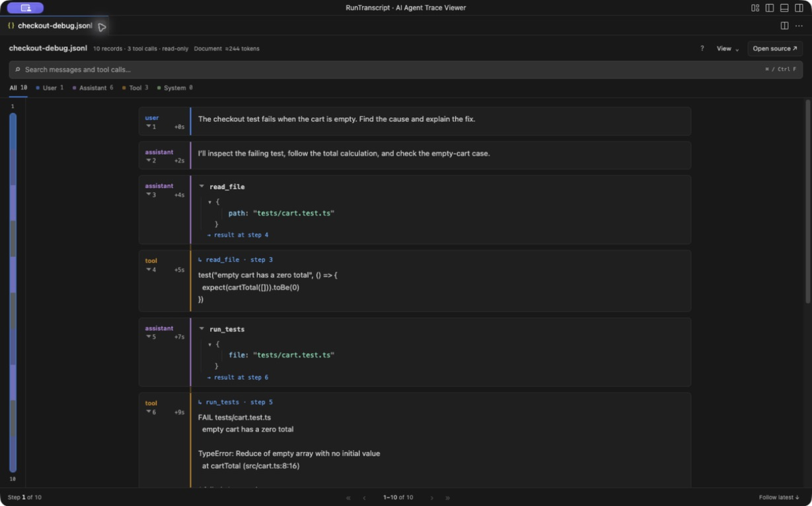
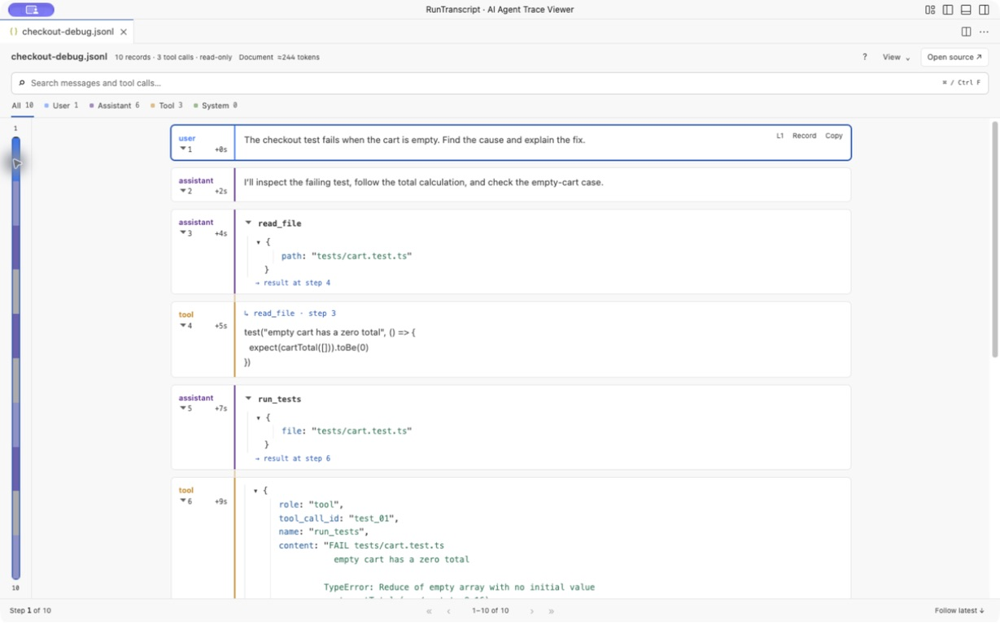

AI agent trace viewer for VS Code
See what your agent actually did.
Read Claude Code, Codex and JSONL traces. Inspect tool calls and jump to the source.

From logs to a readable run.
Search messages and tool arguments. Follow a call to its recorded result. Keep step numbers and source records in view.
Your trace, in your editor.
No account, API key or server setup. No extension telemetry. Read-only previews follow edits and appended records.
Find the failed test.
Watch a short walkthrough of search, tool inspection and source navigation.
Bring the traces you already have.
Recognizes common message and tool-record shapes across agent logs and conversation datasets.
Claude Code & AnthropicMessages, thinking and tool blocks
Codex & OpenAIResponses records and Chat Completions
Gemini & Vercel AI SDKMessage parts and function activity
LangChain, GenAI spans & datasetsConversation envelopes and message attributes
JSONL, NDJSON and JSON arrays. Export schemas vary; see supported shapes and limits.
Open your first trace.
- Download the VSIX, then choose Extensions → … → Install from VSIX… in VS Code.
- Open a trace, or save the synthetic checkout example.
- Right-click the file and choose RunTranscript: Open as Agent Trace.
Preview release for VS Code 1.96+. The default file limit is 100 MB; parsing is in memory. Marketplace publication status is listed in the release notes.
Comfortable in light mode, too.
